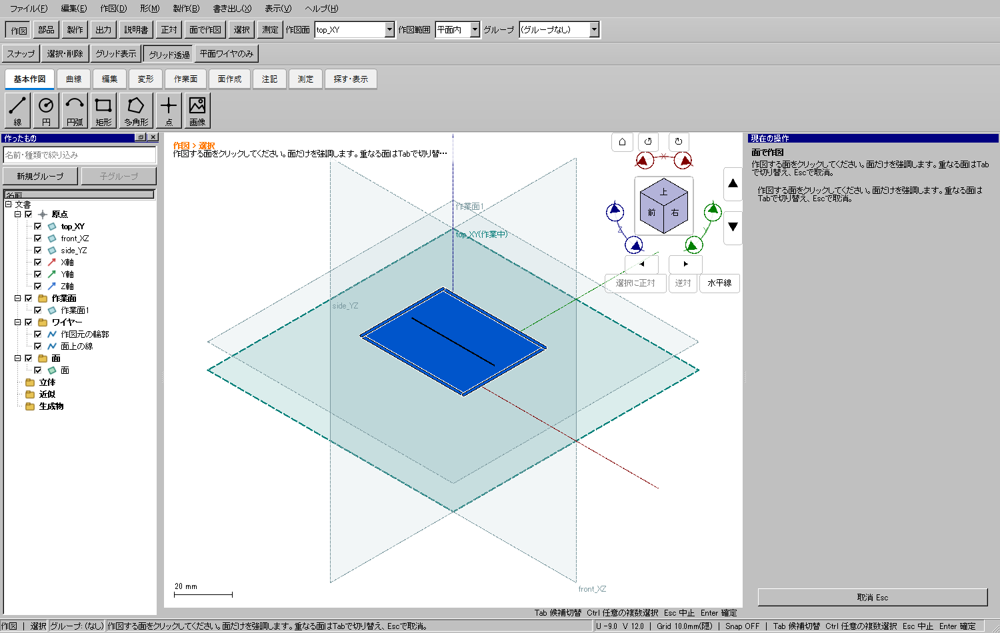
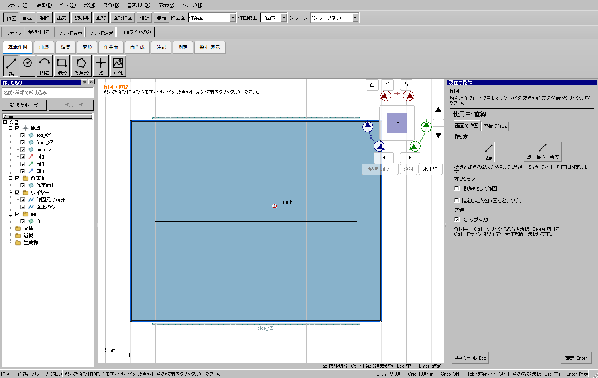
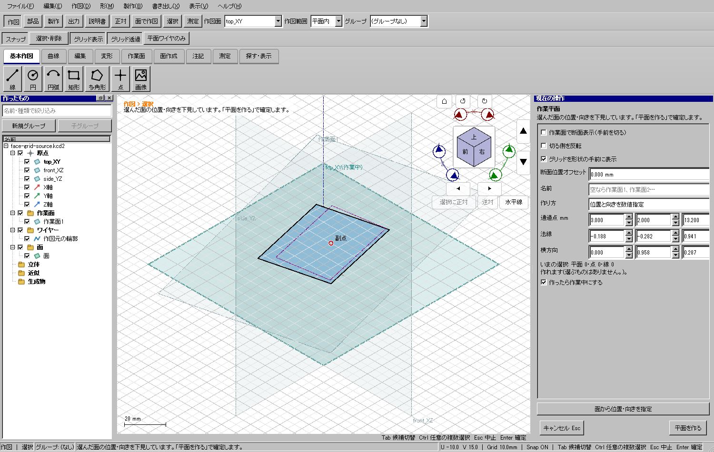
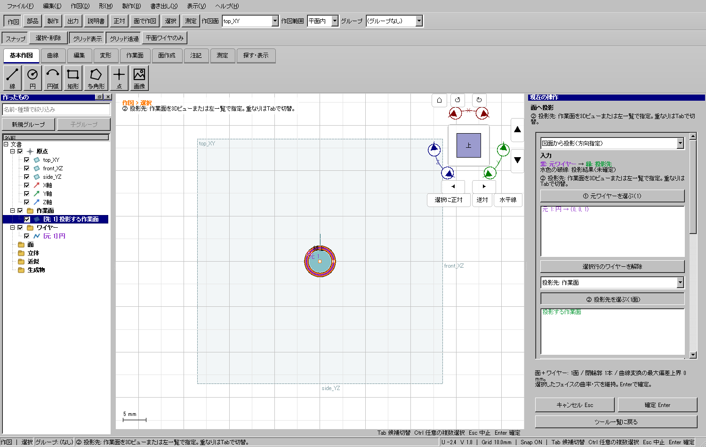
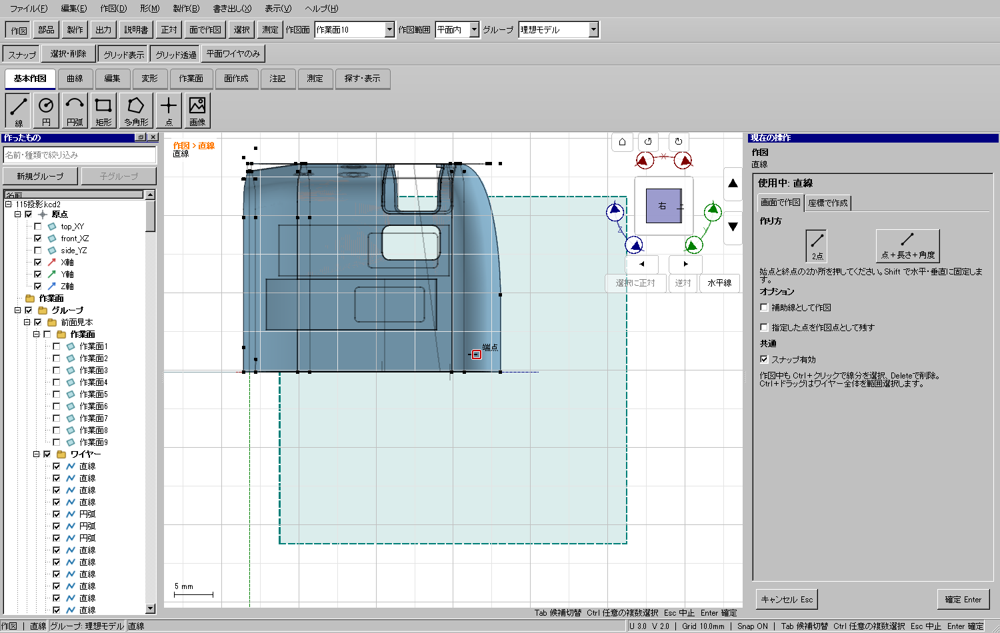

2026-11-18。重点検証を終えてWindows全体・配布版検証へ進む候補。全体検証済みのリリースではありません。
| 入口 | 操作 |
|---|---|
| 面で作図 | ツールを押して面を1回指す。平面またはクリック位置の接平面で、グリッドとスナップを有効にして直線作図。 |
| 作業面を作る | 面から位置・向きを指定 → 下見 → 平面を作る。数値欄の表示桁で面姿勢を丸めず保持。 |
| 面へ投影 | 元ワイヤー → 投影先の種類と対象 → 下見 → 確定。面の境界・穴は切取りに使い、作業面は表示枠による切取りをしない。 |
面だけを候補としてホバー表示し、Tabで重なりを切り替える。単一の平らなサーフェスは左一覧からも使える。曲面の接点、ソリッドの具体的なフェイスは3Dビューで指定する。




最終重点検証は追加15件と添付モデル1件の16件すべて成功。native-acceptance.json と owner-acceptance-preservation.json に記録。
重点試験は out/face-grid-20261118/ にケース選択・JSON・進捗・ログ・実画面を保存。通常Windowsの初回62件中61件が成功。複数面の試験が元サーフェスの表示用境界まで投影結果と混同していたため、実際に生成したワイヤーIDだけを検査するよう試験を修正した。円型・半径・面上位置・独立ワイヤー数の検査を維持して再試験し、成功した。失敗ログは保全。
115投影.kcd2の原本を通常の読込で開き、3Dビューで面を選択して作図、Undo/Redo、別ファイルへ保存・再読込を行った。原本SHA-256は試験前後で同一（84c716b3e6af1ae8f87da4ee4df92226ef326b03e1e44f8c6ce7f84152125ede）。元の面・立体・ワイヤー数を保全する。選んだ位置を中央へ置き、小さく表示された面へ近づく見え方も修正し、再試験した。

全体・配布の結果と起動パスは、正式ゲート完了後に追記する。